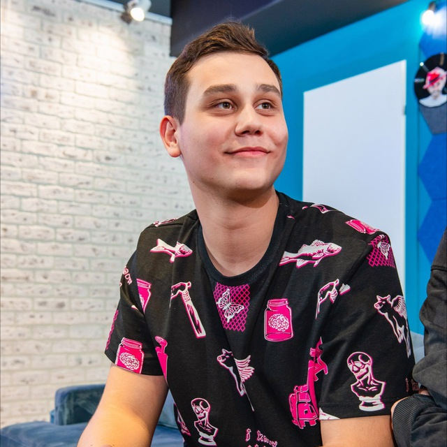

Обо мне
👋 Привет! Меня зовут Глеб
Я из прекрасного города Санкт-Петербург, который славится своими белыми ночами и культурным наследием. Учусь в университете ИТМО, на третьем курсе кафедре КТ и я очень люблю программирование.

👋 Привет! Меня зовут Глеб
Я из прекрасного города Санкт-Петербург, который славится своими белыми ночами и культурным наследием. Учусь в университете ИТМО, на третьем курсе кафедре КТ и я очень люблю программирование.
В глубоком детстве у меня было две кошки, но со временем пришлось оторвать их от сердца и отдать добрым людям, так как у домочадцев появилась сильная аллергия. С тех пор у меня не было домашних животных, но я мечтаю в ближайшее время завести кошку. Вот так я представляю себе свою будущую кошку:
«Приятно слышать, что вы так вежливо обращаетесь с котом. Котам обычно почему-то говорят “ты”, хотя ни один кот никогда ни с кем не пил брудершафта».— Михаил Булгаков, писатель
Отметьте чекбокс, если да!
Помимо программирования, я обожаю баскетбол. Этот вид спорта помогает мне оставаться активным, развивать командный дух и весело проводить время с друзьями. В юности я 4 года занимался баскетболом и участвовал в региональных соревнованиях. Но в конечном итоге пришлось оставить баскетбол в ранге хобби и сосредоточиться на учёбе.

За время обучения в университете я изучил множество языков программирования, хотя к некоторым после сдачи домашних заданий я больше не притронулся. Чтобы вы лучше понимали мои сильные стороны в языках программирования, вот небольшая таблица моих актуальных навыков:
| Навык | Уровень владения |
|---|---|
| Java | ⭐⭐⭐⭐⭐ |
| Kotlin | ⭐⭐⭐⭐⭐ |
| C++ | ⭐⭐⭐⭐ |
| Python | ⭐⭐⭐ |
| JavaScript | ⭐⭐⭐ |
В университете я активно изучал Java. Этому языку фактически было посвящено 3 предмета. Все эти предметы вёл у нас Георгий Александрович Корнеев , который очень силён в данном языке. Именно поэтому в Java у меня самые крепкие знания. Вы можете ознакомиться с некоторыми домашними заданиями, которые я сдавал, на странице: